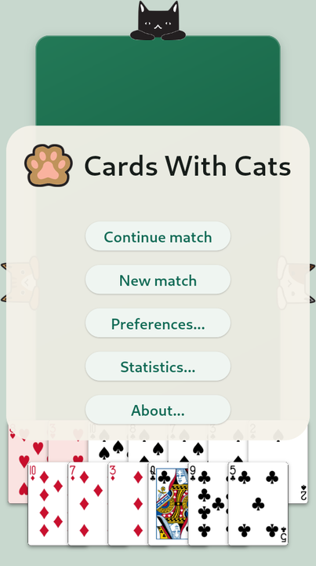
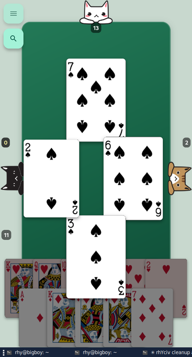
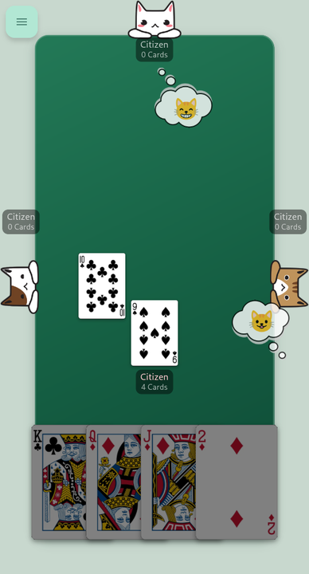

Four classic card games, one table, and three surprisingly strategic cats.
Version 0.4.2 · free and open source under the GPLv3 · no ads, no accounts, no networkEvery mode plays against three cats who bid, block and hold back their high cards rather than dumping them at the first opportunity. Matches save automatically, so you can put the phone down mid-trick.
Avoid the point cards, pass wisely, and watch the running score beside each cat — or take all twenty-six and shoot the moon.
Bid with a partner, manage your bags, and make the contract while keeping your opponents from making theirs.
Predict exactly how many tricks you will take as the hand size shrinks, grows, and the trump suit changes underneath you.
Shed singles and matching sets to climb from Scum to President — then make the losers hand over their best cards next round.
The interface scales from a phone screen to a desktop Flatpak window.



Downloads live on the GitHub releases page. Nothing phones home — the app has no network permissions at all.
Grab the Flatpak bundle and install it for your user:
flatpak install --user ./CardsWithCats-0.4.2-x86_64.flatpak
flatpak run io.github.crhy.CardsWithCatsAlso available through Spaced Bazaar.
Download the APK from the latest release and open it on your device. You will need to allow installs from your browser or file manager, since the app is not distributed through the Play Store.
It is a Flutter app. With the SDK installed:
git clone https://github.com/crhy/CardsWithCats
cd CardsWithCats
flutter test
./scripts/build-flatpak.shGameplay, layout and bot fixes from the 0.4.1 playtest.